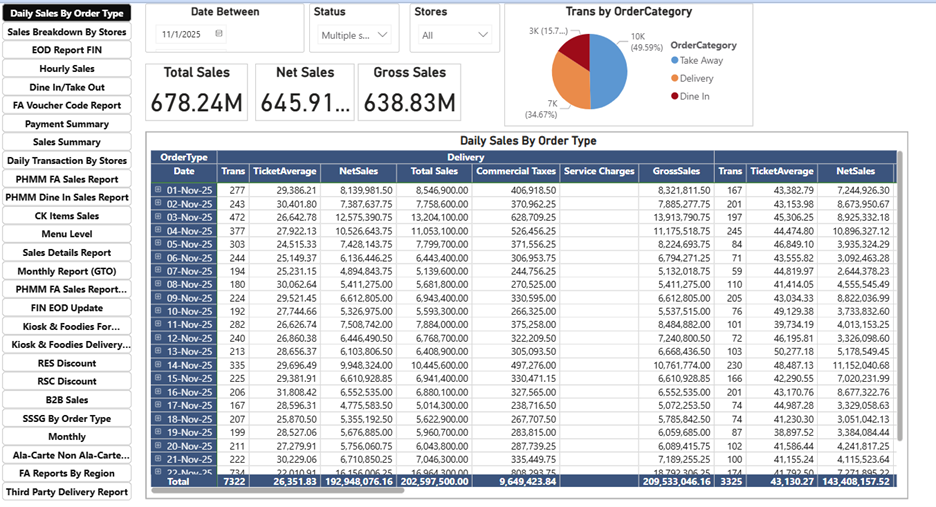
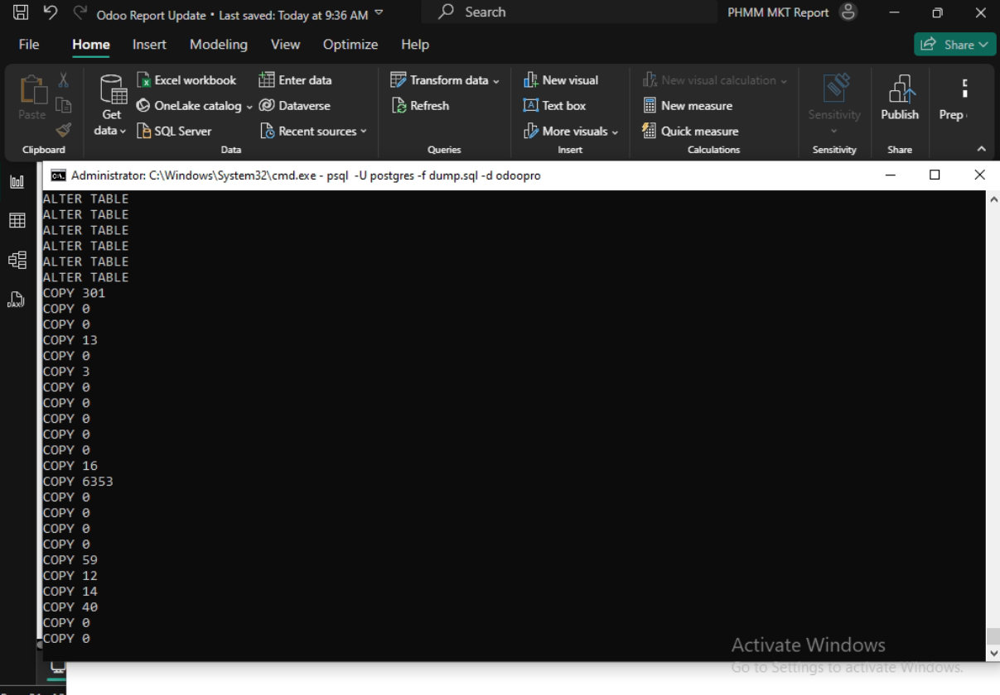
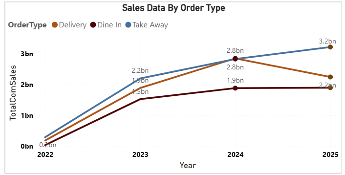
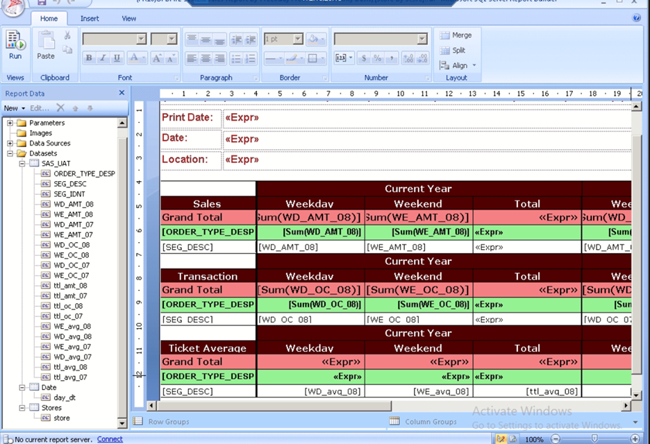
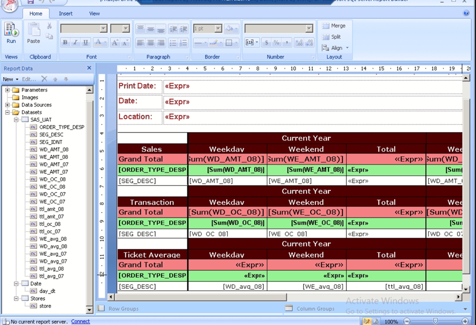
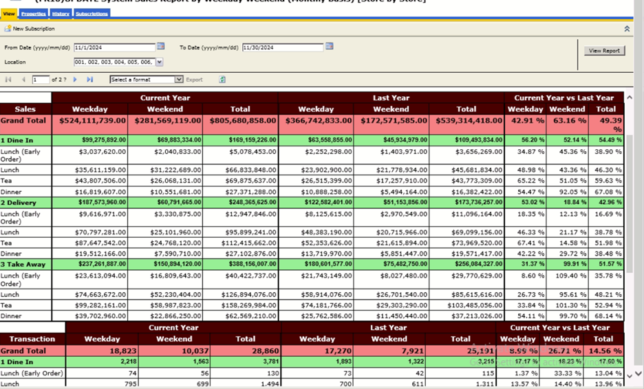
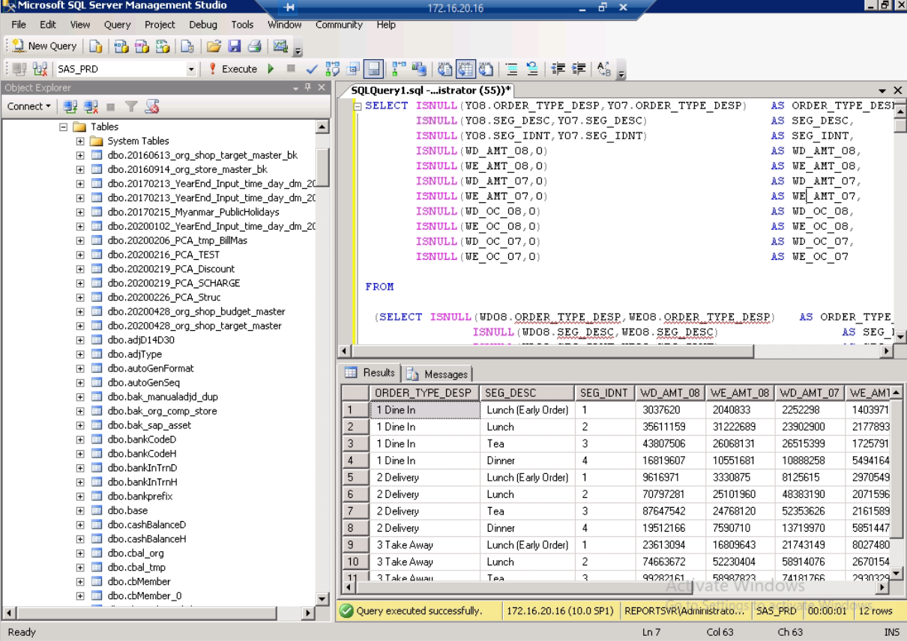

About Me
I am a Senior Data Analyst with 6+ years of experience in retail, banking, and ERP system analysis. I specialize in Power BI dashboards, SQL querying, Odoo ERP integration, SAP reporting, and daily business analysis solutions. I enjoy cleaning complex datasets, solving operational issues, and delivering meaningful insights that help companies make informed decisions.
Technical Skills
- Data Visualization: Power BI (Advanced), Oracle BI Publisher, Report Builder 4.0, Tableau
- Databases: Oracle SQL, PostgreSQL, MySQL, MSSQL
- ERP Systems: Pointsoft System, Odoo ERP, SAP, Oracle BI Publisher
- ETL Tools: Kettle (Pentaho)
- Languages: SQL, PLSQL, PHP, HTML, JavaScript, Python
- Cloud & Automation: SharePoint, OneDrive, Power Automate
- Reports & Data Handling: Sales, Inventory, POS, Manufacturing
Projects
1. Retail Sales Performance Dashboard (Power BI)
Developed a complete KPI dashboard integrating SAP sales, POS data, and promotions. Automated daily refresh and built DAX measures for sales performance analysis.


2. PostgreSQL → Power BI Integration
Connected Odoo PostgreSQL database to Power BI for real-time reporting on sales, inventory, and manufacturing KPIs.

3. Odoo + Legacy Database Consolidated Reporting
Merged historical retail data from old SSMS database with new Odoo data using SQL transformations, enabling centralized reporting.
 

4. POS System Daily Monitoring Dashboard
Built a monitoring dashboard to identify missing transactions, incorrect sales data, and system errors across multiple retail stores.
 Contact
Email: qqhtay2028@gmail.com
Phone: 09796274608
Location: Yangon, Myanmar